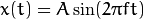
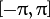
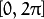
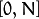
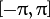
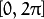
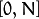
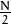
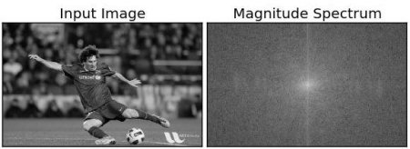

Fourier Transform is used to analyze the frequency characteristics of various filters. For images, 2D Discrete Fourier Transform (DFT) is used to find the frequency domain. A fast algorithm called Fast Fourier Transform (FFT) is used for calculation of DFT. Details about these can be found in any image processing or signal processing textbooks. Please see Additional Resources section.
For a sinusoidal signal, , we can say  is the frequency of signal, and if its frequency domain is taken, we can see a spike at . If signal is sampled to form a discrete signal, we get the same frequency domain, but is periodic in the range  or  (or  for N-point DFT). You can consider an image as a signal which is sampled in two directions. So taking fourier transform in both X and Y directions gives you the frequency representation of image.
is the frequency of signal, and if its frequency domain is taken, we can see a spike at . If signal is sampled to form a discrete signal, we get the same frequency domain, but is periodic in the range  or  (or  for N-point DFT). You can consider an image as a signal which is sampled in two directions. So taking fourier transform in both X and Y directions gives you the frequency representation of image.
More intuitively, for the sinusoidal signal, if the amplitude varies so fast in short time, you can say it is a high frequency signal. If it varies slowly, it is a low frequency signal. You can extend the same idea to images. Where does the amplitude varies drastically in images ? At the edge points, or noises. So we can say, edges and noises are high frequency contents in an image. If there is no much changes in amplitude, it is a low frequency component. ( Some links are added to Additional Resources which explains frequency transform intuitively with examples).
Now we will see how to find the Fourier Transform.
First we will see how to find Fourier Transform using Numpy. Numpy has an FFT package to do this. np.fft.fft2() provides us the frequency transform which will be a complex array. Its first argument is the input image, which is grayscale. Second argument is optional which decides the size of output array. If it is greater than size of input image, input image is padded with zeros before calculation of FFT. If it is less than input image, input image will be cropped. If no arguments passed, Output array size will be same as input.
Now once you got the result, zero frequency component (DC component) will be at top left corner. If you want to bring it to center, you need to shift the result by  in both the directions. This is simply done by the function, np.fft.fftshift(). (It is more easier to analyze). Once you found the frequency transform, you can find the magnitude spectrum.
import cv2
import numpy as np
from matplotlib import pyplot as plt
img = cv2.imread('messi5.jpg',0)
f = np.fft.fft2(img)
fshift = np.fft.fftshift(f)
magnitude_spectrum = 20*np.log(np.abs(fshift))
plt.subplot(121),plt.imshow(img, cmap = 'gray')
plt.title('Input Image'), plt.xticks([]), plt.yticks([])
plt.subplot(122),plt.imshow(magnitude_spectrum, cmap = 'gray')
plt.title('Magnitude Spectrum'), plt.xticks([]), plt.yticks([])
plt.show()
Result look like below:

See, You can see more whiter region at the center showing low frequency content is more.
So you found the frequency transform Now you can do some operations in frequency domain, like high pass filtering and reconstruct the image, ie find inverse DFT. For that you simply remove the low frequencies by masking with a rectangular window of size 60x60. Then apply the inverse shift using np.fft.ifftshift() so that DC component again come at the top-left corner. Then find inverse FFT using np.ifft2() function. The result, again, will be a complex number. You can take its absolute value.
rows, cols = img.shape
crow,ccol = rows/2 , cols/2
fshift[crow-30:crow+30, ccol-30:ccol+30] = 0
f_ishift = np.fft.ifftshift(fshift)
img_back = np.fft.ifft2(f_ishift)
img_back = np.abs(img_back)
plt.subplot(131),plt.imshow(img, cmap = 'gray')
plt.title('Input Image'), plt.xticks([]), plt.yticks([])
plt.subplot(132),plt.imshow(img_back, cmap = 'gray')
plt.title('Image after HPF'), plt.xticks([]), plt.yticks([])
plt.subplot(133),plt.imshow(img_back)
plt.title('Result in JET'), plt.xticks([]), plt.yticks([])
plt.show()
Result look like below:
The result shows High Pass Filtering is an edge detection operation. This is what we have seen in Image Gradients chapter. This also shows that most of the image data is present in the Low frequency region of the spectrum. Anyway we have seen how to find DFT, IDFT etc in Numpy. Now let’s see how to do it in OpenCV.
If you closely watch the result, especially the last image in JET color, you can see some artifacts (One instance I have marked in red arrow). It shows some ripple like structures there, and it is called ringing effects. It is caused by the rectangular window we used for masking. This mask is converted to sinc shape which causes this problem. So rectangular windows is not used for filtering. Better option is Gaussian Windows.
OpenCV provides the functions cv2.dft() and cv2.idft() for this. It returns the same result as previous, but with two channels. First channel will have the real part of the result and second channel will have the imaginary part of the result. The input image should be converted to np.float32 first. We will see how to do it.
import numpy as np
import cv2
from matplotlib import pyplot as plt
img = cv2.imread('messi5.jpg',0)
dft = cv2.dft(np.float32(img),flags = cv2.DFT_COMPLEX_OUTPUT)
dft_shift = np.fft.fftshift(dft)
magnitude_spectrum = 20*np.log(cv2.magnitude(dft_shift[:,:,0],dft_shift[:,:,1]))
plt.subplot(121),plt.imshow(img, cmap = 'gray')
plt.title('Input Image'), plt.xticks([]), plt.yticks([])
plt.subplot(122),plt.imshow(magnitude_spectrum, cmap = 'gray')
plt.title('Magnitude Spectrum'), plt.xticks([]), plt.yticks([])
plt.show()
Note
You can also use cv2.cartToPolar() which returns both magnitude and phase in a single shot
So, now we have to do inverse DFT. In previous session, we created a HPF, this time we will see how to remove high frequency contents in the image, ie we apply LPF to image. It actually blurs the image. For this, we create a mask first with high value (1) at low frequencies, ie we pass the LF content, and 0 at HF region.
rows, cols = img.shape
crow,ccol = rows/2 , cols/2
# create a mask first, center square is 1, remaining all zeros
mask = np.zeros((rows,cols,2),np.uint8)
mask[crow-30:crow+30, ccol-30:ccol+30] = 1
# apply mask and inverse DFT
fshift = dft_shift*mask
f_ishift = np.fft.ifftshift(fshift)
img_back = cv2.idft(f_ishift)
img_back = cv2.magnitude(img_back[:,:,0],img_back[:,:,1])
plt.subplot(121),plt.imshow(img, cmap = 'gray')
plt.title('Input Image'), plt.xticks([]), plt.yticks([])
plt.subplot(122),plt.imshow(img_back, cmap = 'gray')
plt.title('Magnitude Spectrum'), plt.xticks([]), plt.yticks([])
plt.show()
See the result:
Note
As usual, OpenCV functions cv2.dft() and cv2.idft() are faster than Numpy counterparts. But Numpy functions are more user-friendly. For more details about performance issues, see below section.
Performance of DFT calculation is better for some array size. It is fastest when array size is power of two. The arrays whose size is a product of 2’s, 3’s, and 5’s are also processed quite efficiently. So if you are worried about the performance of your code, you can modify the size of the array to any optimal size (by padding zeros) before finding DFT. For OpenCV, you have to manually pad zeros. But for Numpy, you specify the new size of FFT calculation, and it will automatically pad zeros for you.
So how do we find this optimal size ? OpenCV provides a function, cv2.getOptimalDFTSize() for this. It is applicable to both cv2.dft() and np.fft.fft2(). Let’s check their performance using IPython magic command %timeit.
In [16]: img = cv2.imread('messi5.jpg',0)
In [17]: rows,cols = img.shape
In [18]: print rows,cols
342 548
In [19]: nrows = cv2.getOptimalDFTSize(rows)
In [20]: ncols = cv2.getOptimalDFTSize(cols)
In [21]: print nrows, ncols
360 576
See, the size (342,548) is modified to (360, 576). Now let’s pad it with zeros (for OpenCV) and find their DFT calculation performance. You can do it by creating a new big zero array and copy the data to it, or use cv2.copyMakeBorder().
nimg = np.zeros((nrows,ncols))
nimg[:rows,:cols] = img
OR:
right = ncols - cols
bottom = nrows - rows
bordertype = cv2.BORDER_CONSTANT #just to avoid line breakup in PDF file
nimg = cv2.copyMakeBorder(img,0,bottom,0,right,bordertype, value = 0)
Now we calculate the DFT performance comparison of Numpy function:
In [22]: %timeit fft1 = np.fft.fft2(img)
10 loops, best of 3: 40.9 ms per loop
In [23]: %timeit fft2 = np.fft.fft2(img,[nrows,ncols])
100 loops, best of 3: 10.4 ms per loop
It shows a 4x speedup. Now we will try the same with OpenCV functions.
In [24]: %timeit dft1= cv2.dft(np.float32(img),flags=cv2.DFT_COMPLEX_OUTPUT)
100 loops, best of 3: 13.5 ms per loop
In [27]: %timeit dft2= cv2.dft(np.float32(nimg),flags=cv2.DFT_COMPLEX_OUTPUT)
100 loops, best of 3: 3.11 ms per loop
It also shows a 4x speed-up. You can also see that OpenCV functions are around 3x faster than Numpy functions. This can be tested for inverse FFT also, and that is left as an exercise for you.
A similar question was asked in a forum. The question is, why Laplacian is a high pass filter? Why Sobel is a HPF? etc. And the first answer given to it was in terms of Fourier Transform. Just take the fourier transform of Laplacian for some higher size of FFT. Analyze it:
import cv2
import numpy as np
from matplotlib import pyplot as plt
# simple averaging filter without scaling parameter
mean_filter = np.ones((3,3))
# creating a guassian filter
x = cv2.getGaussianKernel(5,10)
gaussian = x*x.T
# different edge detecting filters
# scharr in x-direction
scharr = np.array([[-3, 0, 3],
[-10,0,10],
[-3, 0, 3]])
# sobel in x direction
sobel_x= np.array([[-1, 0, 1],
[-2, 0, 2],
[-1, 0, 1]])
# sobel in y direction
sobel_y= np.array([[-1,-2,-1],
[0, 0, 0],
[1, 2, 1]])
# laplacian
laplacian=np.array([[0, 1, 0],
[1,-4, 1],
[0, 1, 0]])
filters = [mean_filter, gaussian, laplacian, sobel_x, sobel_y, scharr]
filter_name = ['mean_filter', 'gaussian','laplacian', 'sobel_x', \
'sobel_y', 'scharr_x']
fft_filters = [np.fft.fft2(x) for x in filters]
fft_shift = [np.fft.fftshift(y) for y in fft_filters]
mag_spectrum = [np.log(np.abs(z)+1) for z in fft_shift]
for i in xrange(6):
plt.subplot(2,3,i+1),plt.imshow(mag_spectrum[i],cmap = 'gray')
plt.title(filter_name[i]), plt.xticks([]), plt.yticks([])
plt.show()
See the result:
From image, you can see what frequency region each kernel blocks, and what region it passes. From that information, we can say why each kernel is a HPF or a LPF